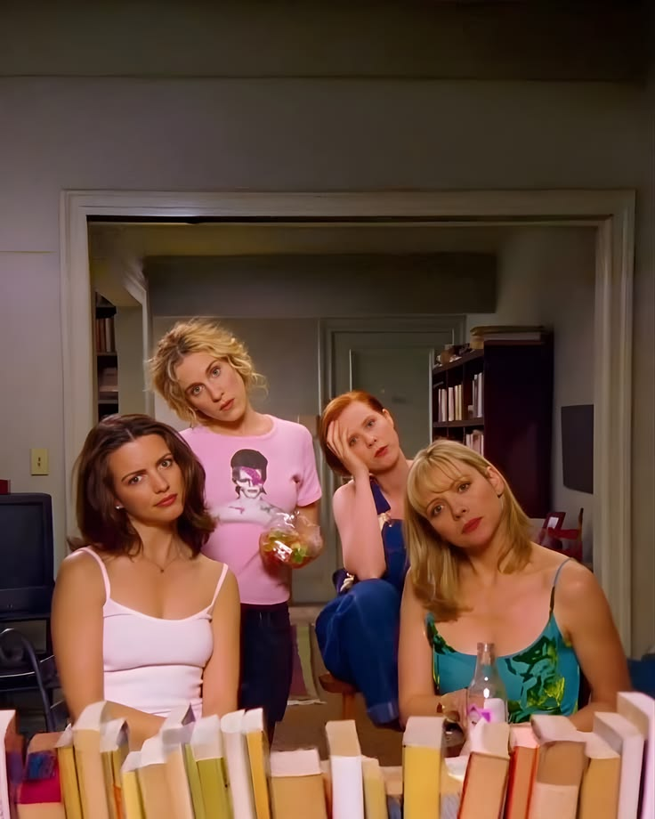

Sex and the City trata sobre cuatro amigas en Nueva York que intentan sobrevivir al amor, las citas, el trabajo y la vida adulta, mientras se cuentan absolutamente todo. Entre dramas amorosos, salidas, moda y muchas conversaciones sobre relaciones, Carrie va narrando sus experiencias y las de sus amigas..